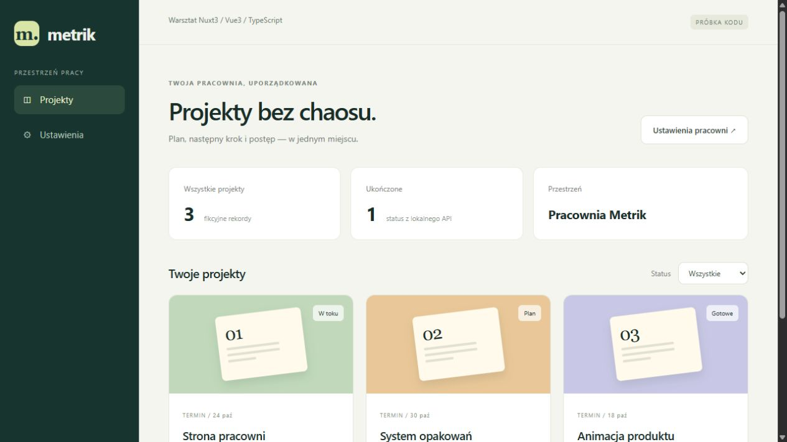
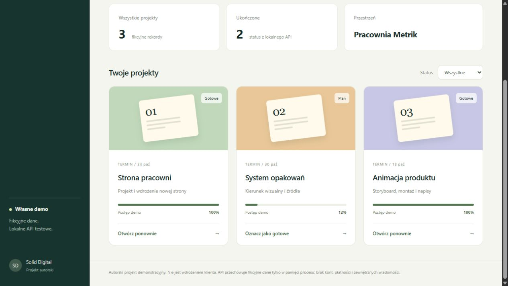
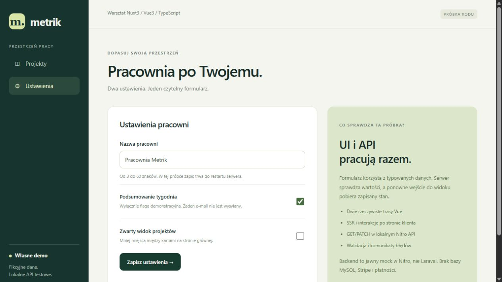

Projekt autorski / rzeczywisty Nuxt3 / fikcyjne dane
Dwie trasy. Typowane dane. Sprawdzony zapis.
Własna próbka aplikacji Metrik: widok projektów z edycją statusu oraz formularz ustawień pracowni. Zbudowana w Nuxt3, Vue3 i TypeScript, z rzeczywistym lokalnym GET/PATCH API w Nitro. Ta publiczna strona pokazuje dowody i źródła; nie udostępnia działającego backendu.
2trasy Vue: projekty i ustawienia10zaliczonych sprawdzeń HTTP0 błędówtypecheck, build i testy HTTP Pobierz pełne źródła próbki Parametry i dowody testów
Sprawdzono pobieranie danych, zapis i odczyt zmian, odrzucanie nieprawidłowych wartości oraz renderowanie obu tras z aktualnym stanem serwera. Źródła zawierają jawny mockAPI, fikcyjne rekordy, instrukcję uruchomienia oraz skrypt weryfikacji.
Układ projektów

Zmiana statusu i odczyt po odświeżeniu

Ustawienia zapisane przez API
